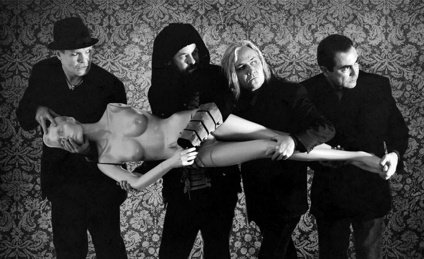

Historia
15/04/22 by Richie Hdez
No olvides Comentar
CUCA, la banda de rock de México, a 27 años de su fundación sigue atrayendo nuevos oyentes con temas clásicos como El Son del Dolor, Alcohol y Rocanrol y La Balada. La agrupación emblemática de Guadalajara Jalisco ahora se prepara para atacar los escenarios con su nueva producción SEMEN que incluye 13 temas entre los que destaca el primer corte Caperucita Roja que se promueve con un videoclip realizado por Jobo Panteras. Canciones como Cosas Peligrosas, Legionarios del Pisto y Feminazi, resumen el humor corrosivo e irreverente que ha caracterizado a la banda. No falta el toque latino en el track Macusa, que incluye una sección de metales arreglada por Yosvany Estepe. El tema socio-político del álbum Fe de Ratas donde José Fors hace una disección del sistema político y religioso en México. El humor carrilludo en Tu Mamá y Tan Pedo.
La producción corrió nuevamente a cargo de los cuatro elementos de CUCA, así como la autoría de todos los temas. El disco se grabó en SoundTube Estudios de Guadalajara y fue mezclado por Jorge “la chiquis” Amaro y masterizado por Tuti Perales en Oigo Estudios. La sugerente portada que muestra una cucaracha montada sobre una mujer desnuda, les mereció en un principio la censura de la popular red social Facebook, misma que después cedió ante la proliferación de la imagen gracias a los seguidores de la banda que se encargaron de reproducirla y hacerla viral.

A La historia de este grupo originario de Guadalajara comenzó a finales de 1989 cuando José Fors (antes con Mask y Duda Mata) y Carlos Avilez (antes con Khafra) se conocieron y decidieron crear una banda de rock, muy pronto Galo Ochoa (antes con 40 grados) y Nacho el Implacable González (antes con 40 grados y Azul Violeta) se les unieron para llamarse CUCA, un nombre que daría mucho de que hablar. Dos años más tarde salió a la luz su primer álbum LA INVASION DE LOS BLATIDOS, que también fue editado en Estados Unidos, Colombia y España, fue disco de oro por ventas en México y temas como El Son Del Dolor y La Pucha Asesina se han convertido en verdaderos clásicos.
En 1993 El grupo partió a Inglaterra donde grabaron su segundo CD bajo la producción de Robin Black (Black Sabbath, Jethro Tull y muchos otros) Después del lanzamiento de TU CUCA MADRE ATACA DE NUEVO, José Fors salió del grupo dejando su lugar a su hermano Alfonso Fors, con quien la banda terminó la gira de ese disco y grabó el tercero titulado LA RACHA, nuevamente producido por Robin Black, de aquí se desprende el sencillo más radiado de CUCA: La Balada, misma que estuvo 6 meses en los primeros lugares de la radio y ganó la distinción de los radio escuchas de Órbita FM en la Ciudad de México para programarse 48 horas continuas en esa estación.
Para 1996 José Fors regresó a CUCA y al año siguiente lanzaron EL CUARTO DE CUCA producido por Ricardo Mollo (Divididos). Sin embargo, en 1999 El grupo se separó tomando cada uno de sus integrantes distintos rumbos en la música y es hasta el año 2004 que CUCA regresa a los escenarios en el festival Vive Latino de la Ciudad de México y una semana después el grupo realizó dos fechas en el Parque Agua Azul de Guadalajara, donde grabaron el CD y DVD en vivo llamado VIVA CUCA.
Posteriormente en abril de 2006 la banda entró nuevamente al estudio con su ya productor de cabecera Robin Black para realizar el álbum titulado CUCA CON PELOTAS, desafortunadamente el grupo entró en un gran letargo creativo que duró siete años y concluyó con la salida del guitarrista Galo Ochoa.
En 2014 CUCA renueva sus filas con Alejandro Otaola quien sustituye a Ochoa en la guitarra y ha aporta un sonido refrescante y vigoroso a los nuevos 14 temas del sexto disco de estudio titulado LA VENGANZA DE CUCAMONGA lanzado el 15 de marzo de 2015. Este material totalmente independiente les valió la primera nominación al Grammy Latinos como mejor álbum de rock en español y una nueva gira por México, Estados Unidos y culminó visitando por primera vez Argentina donde celebraron tres presentaciones, una en el escenario principal del festival Cosquín Rock y un par de fechas más en Buenos Aires.
Después de la exhaustiva gira y para celebrar sus 27 años de trayectoria CUCA lanza en abril de 2017 una caja conmemorativa que incluye un nuevo disco en vivo titulado CUCA VIVE, grabado en dos presentaciones en la Ciudad de México y Guadalajara respectivamente; un álbum de fotos tomadas en esos conciertos y el nuevo disco llamado SEMEN que contiene trece temas originales firmados en su totalidad por Fors-Otaola-Avilez-González. De este objeto sólo se fabricaron 500 unidades numeradas que se ofrecieron a los más afortunados (y rápidos) seguidores de CUCA.
Actualmente la agrupación celebra el lanzamiento de SEMEN en su propio formato ya separado del objeto conmemorativo, mismo que promueven con nueva gira anual por México, Estados Unidos, Colombia y nuevamente Argentina para cerrar este 2017.
15/04/22 by Richie Hdez
No olvides Comentar